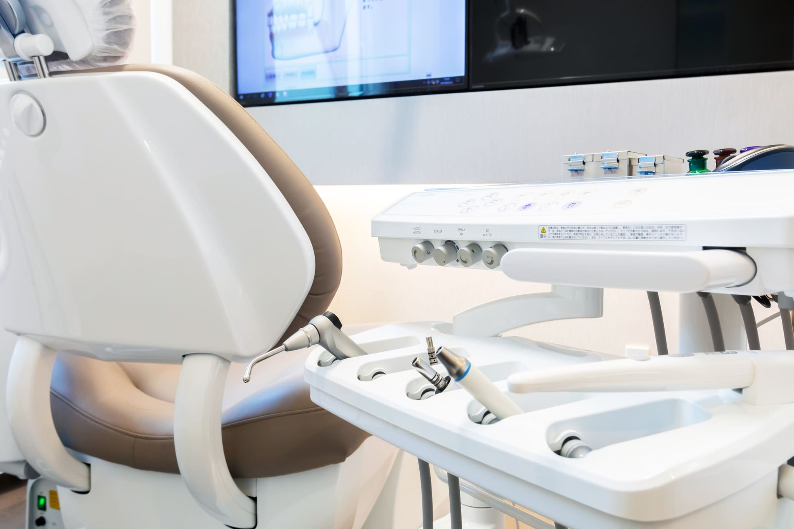
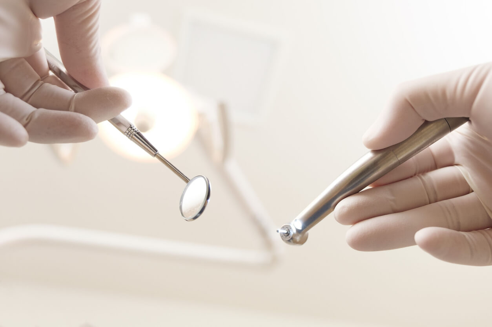

1 日で体系化できる 小児歯科のすべてをまとめて学ぶ日
予防・定期管理・治療をトータル1ごつなぐ“ことで、リコール率と収益性を最大化する実践ノウハウを1日で習得！
| 開催日 | 2026年1月11日（日）10:00~16:00 |
|---|---|
| 形式 | リアル＋オンライン（見逃し配信あり） |
| 参加費 | 41,800円（税込） |
| 講師 | 岨卓与（そわたくよ）1 ハロ-こどもフアミリ-歯科 院長／小児歯科実践塾主宰 |
こんな悩み、ありませんか？
- 小児患者の定期管理が定着しない
- 保護者に予防の重要性が伝わらない
- 治療とメンテの流れが医院全体で共有されていない
- 「うちのスタッフは子どもの扱いが苦手」と感じる
- せっかく治してもリコールにつながらない
そんな先生のための講座です。一度に「小児歯科の根幹」を整理し、医院全体の動きを変える日になります。
この講座で得られること
- 診療効率と信頼関係" を両立する小児歯科の運用モデルを体系的に習得
- 再発Uこくい治療・再来院につながる導線設計を理解
- 保護者が自然と通い続ける仕組み化の設計法をマスター
- スタッフが自走できるチーム連携の導き方を学べる
- 明日から医院に導入できる具体的なアクショソリストを持ち帰れる
この講座が選ばれる理由 (他講座との違い)
| 項目 | 他講座 | 本講座 |
|---|---|---|
| 学びの範囲 | 部分的 (治療行動など) | 予防・定期・治療を一気通貫で習得 |
| 内容 | 理論中心 | 現場即実践の具体策中心 |
| スタッフ共有 | 院長のみ理解 | チーム全体で共有しやすい設計 |
| 成果 | 点的改善 | 院内全体の流れが変わる構造改善 |
| フォロー | 単発終了 | 見逃し配信+復習資料つき |
受講医院の成果
CASE.1 千葉県／H歯科医院
小児定期来院率48%→84％へ改善
CASE.2 大阪府／Eデンタルクリニック
小児リコール月間300件→520件に増加
CASE.3 長野県／O歯科医院
スタッフが自主的に小児対応を改善、院長の負担が激減
講師紹介
ハローこどもファミリー歯科院長／小児歯科実践塾主宰
全国400医院以上を支援し、延べ2,000名の歯科医師・スタッフに実践ノウハウを提供。
自身の医院では小児患者比率70％・スタッフ30名体制を構築。
「むし歯なしの幸せを届けきる」を理念に、日本の小児歯科現場を1チームで成長する医院“へと導く活動を続けている。
小児歯科専門コンサルタント
岨 卓与（そわ たくよ）
開催概要
| 項目 | 内容 |
|---|---|
| 開催日 | 2026年1月11日（日） |
| 時間 | 10:00～16:00 （昼休憩あり） |
| 形式 | リアル（東京）＋オンライン（Zoom) |
| 見逃し配信 | あり（2週間） |
| 定員 | 会場30名／オンライン100名 |
| 参加費 | 41,800円（税込） |
| 支払方法 | クレジットカード／銀行振込 |
よくある質問（FAQ)
Q. 当日参加できない場合は？
→見逃し配信をご用意しています。2週間何度でも視聴可能です。
Q. スタッフも一緒に視聴できますか？
→はい。同医院内であれば複数人の視聴が可能です。
Q. 初心者でも理解できますか？
→予防一治療までを体系的に整理しているので、初参加の先生でも理解しやすい内容です。
Q. 支払い後に領収書は発行されますか？
→イソボイス対応の領収書をメールにて発行いたします。
最後に
小児歯科を「点」ではなく「線」でつなぐと、
患者の定着・スタッフのやりがい・経営の安定が一気に変わります。
"今年、医院の小児歯科をもう一段アップデートしたい"
そんな先生にこそ、受けてほしい講座です。
受講者特典
特典① 講師・岨 卓与による「オンライングループ相談（(5人1組45分)(¥55,000相当）"
あなたの医院だけの課題を、講師が直接アドバイス。
全国400 医院を導いた岨卓与の"個別戦略セッション"が無料特典に。
通常￥55,000(税込）の「オンライングループ相談（45 分）Jを、受講者限定で無料プレゼント。
講座で学んだ内容を、あなたの医院の現場に合わせて最適化します。
"理論を結果に変える"ための導線づくりを、講師本人が直接サポート。
個別相談枠は限られているため、早期お申し込みの方から」―頂に案内いたします。
価値：￥55,OOO相当1 形式：Zoomオンライン
特典② 学びを医院に落とし込む「実践チェックリスト」
学んで終わりにしない。
"翌日から動ける" ためのチェックリスト付き。
講座で学んだ内容を医院で定着させるために、"行動ベース"で整理したチェックリストをプレゼント。
「何から」「誰が」「どう実行するか」が一目で分かり、受講直後のチームMTGでもそのまま活用できます。
（特典③）講座で紹介した「診療器具リスト（購入先・価格つき）」
「これ、どこで買えますか？」にすべて答える。
講師愛用の器具りストを"そのまま導入"できる資料つき。
講座内で紹介した診療効率UPのための器具を、購入先・価格つきで一覧化。
岨卓与先生が実際に使用して成果を出している器具のみを厳選しています。
"講座の内容をすぐ医院で再現できる"実践資料です。
特典④ 見逃し配信（2 週間視聴可）
忙しい先生でも安心。
当日の講座は、何度でも・2週間視聴可能。
「当日参加できない」「復習したい」という方のために、**見逃し配信（2週間）**をご用意しています。講義の重要ポイントを何度も見返せるため、医院での実践・スタッフ教育にも最適。
視聴はスマホ・タブレット・PC すべて対応。いつでも復習可能です。
特典⑤ 早期申込特典：2025年12月20 日までにお申し込みで 3,000円OFF!
一番早く動いた先生に、成果も一番早く届く。
12月20日までの申込で3,000円OFF!
早期申込者限定で、受講料41,800 円→38,800 円（税込）に割引いたします。
定員に達し次第締切となりますので、少しでも気になった今がチャンスです。
この価格で受けられるのは今回限り。ぜひお早めにお申し込みください。
小児歯科1Dayセミナーの
3つのポイント
POINT1
小児歯科の専門家が、診療がうまくいくノウハウを徹底解説！
本セミナーでは、治療技術だけでなく、患者さんを安定的に増やす方法や、医院の運営戦略、保護者との信頼関係を築く秘訣など、医院の成功に必要な知識が身につきます。
POINT2
“子どもを泣かせず”スムーズに診療をする方法が学べる！
子どもが安心して通える診療を実現するためのテクニックやコツを、実例を通して実践的に学べるセミナーです。
POINT3
明日からすぐに実践できる治療テクニックを伝授！
詰め物が取れたり治療が長引くと、保護者からの信頼が低下し、メンテナンスに繋がりません。本セミナーでは、患者さんをメンテナンスに導くための治療技術を伝授します。
セミナー詳細のご案内
| 日時 | 2025年1月12日（日）10：00～16：30 （13：00～14：00昼休憩） |
|---|---|
| 受講形式 | ■オンライン受講 ■リアル受講 限定30名（三宮開催：兵庫県神戸市） |
| 参加費 | 33.000円（税込） |
| 決済方法 | クレジット決済・銀行振込 |
| 受講形式のメリット | ※オンライン受講 パソコンがあればどこでも参加できます |
| 見逃し配信 | 見逃し配信（有り） ※1/26（日）まで |
セミナー内容
| 内容① | 予定通りの小児歯科診療に必要な小児歯科の原則 |
|---|---|
| 内容② | 不採算が、超優良採算に変化する小児カリエス治療のやり方 |
| 内容③ | 治療を99％成功させるための治療前スクリーニングについて |
| 内容④ | 削ってばかりの歯医者にさよならする小児カリエスマネジメントのポイント |
| 内容⑤ | 学校・園検診の言いなりの診療でいいの？スタッフ全員ができる正確なむし歯の診断法 |
| 内容⑥ | むし歯を減らしながら、小児矯正契約数を増加させるしくみ |
※本セミナーの2025年開催は今回ご案内している1回だけです。